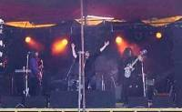

Demos
A selection of demo samples from some of the Black Sabbath classics played by Sabbra Cadabra are available here for your listening pleasure. You will need an MP3 player in order to listen to these demos. If you can't already do this, then a player can be downloaded from http://www.winamp.com/.